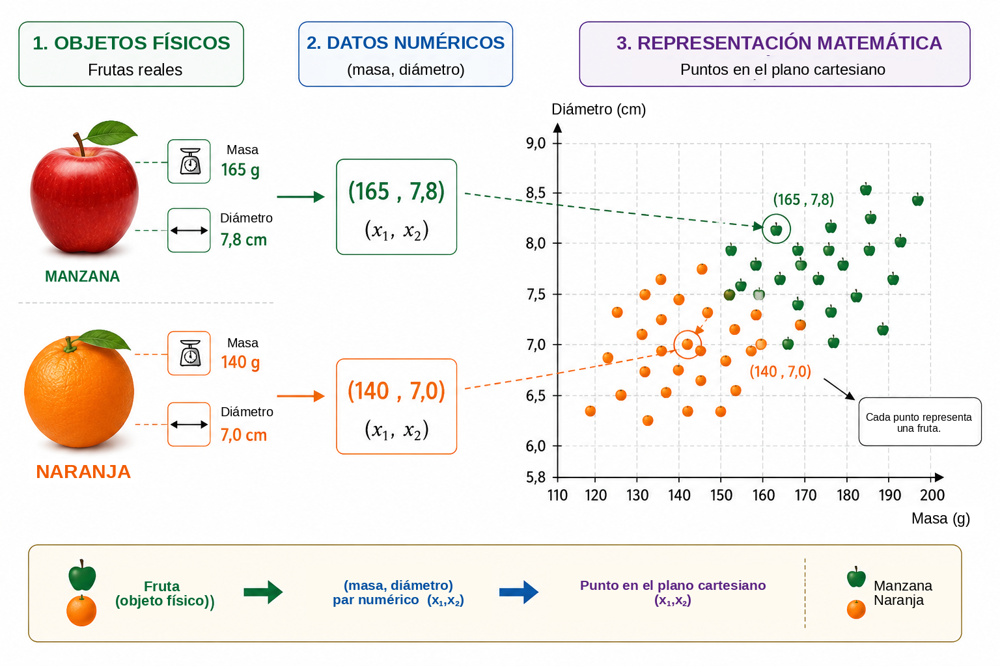
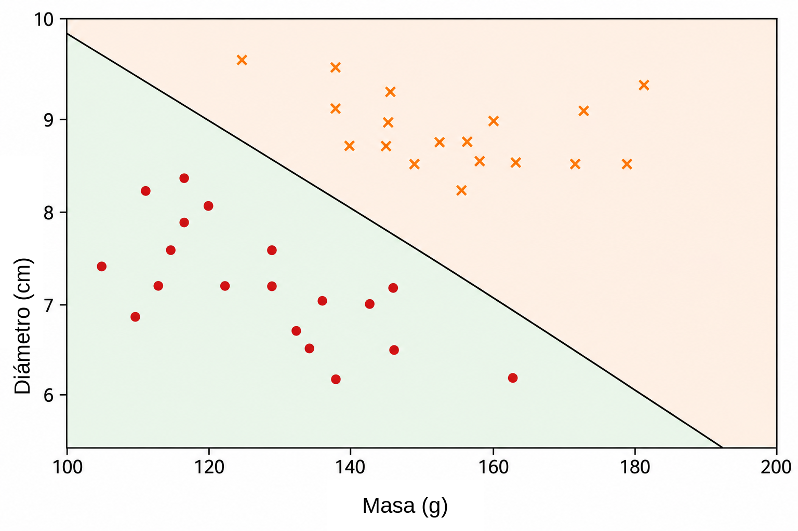
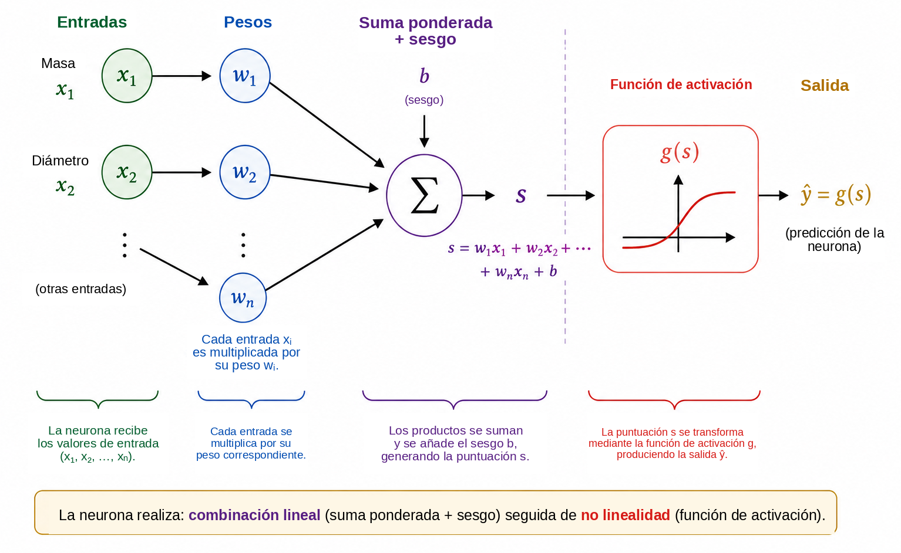
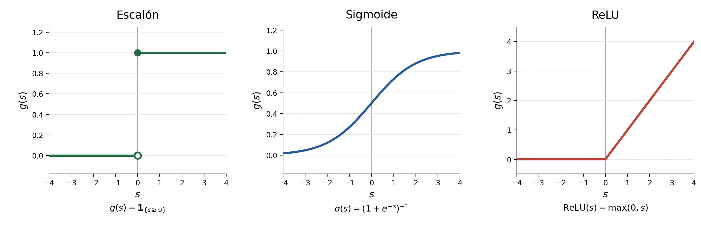
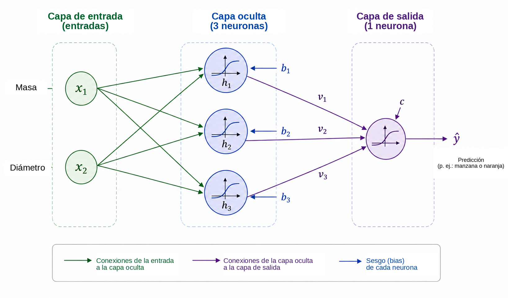
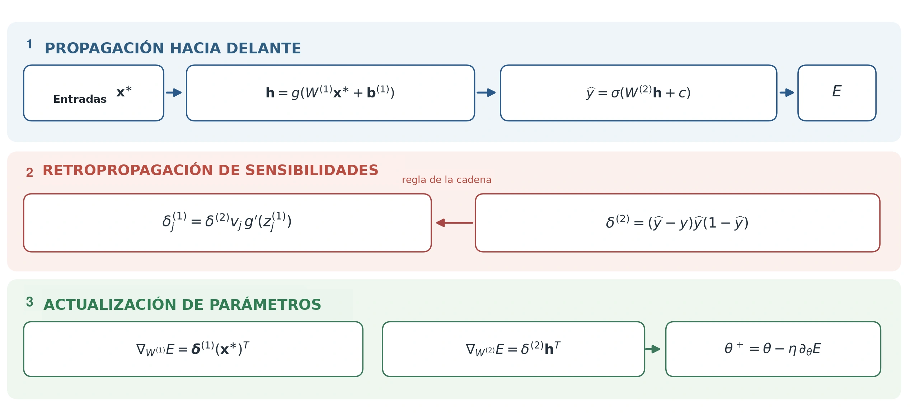
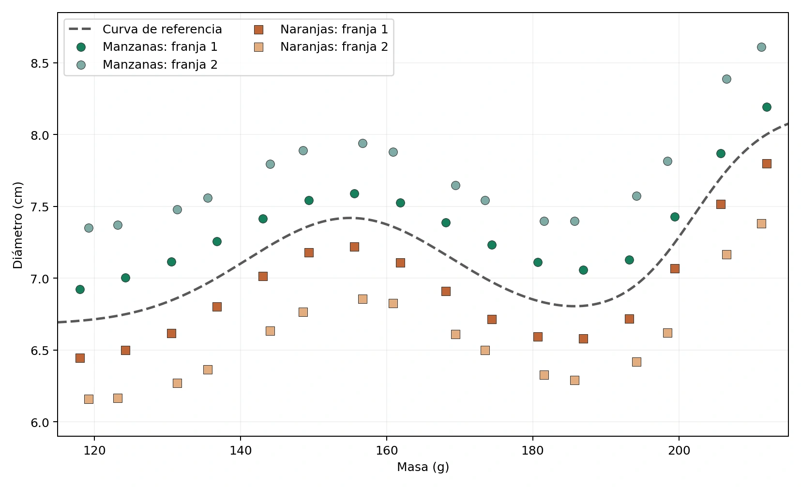
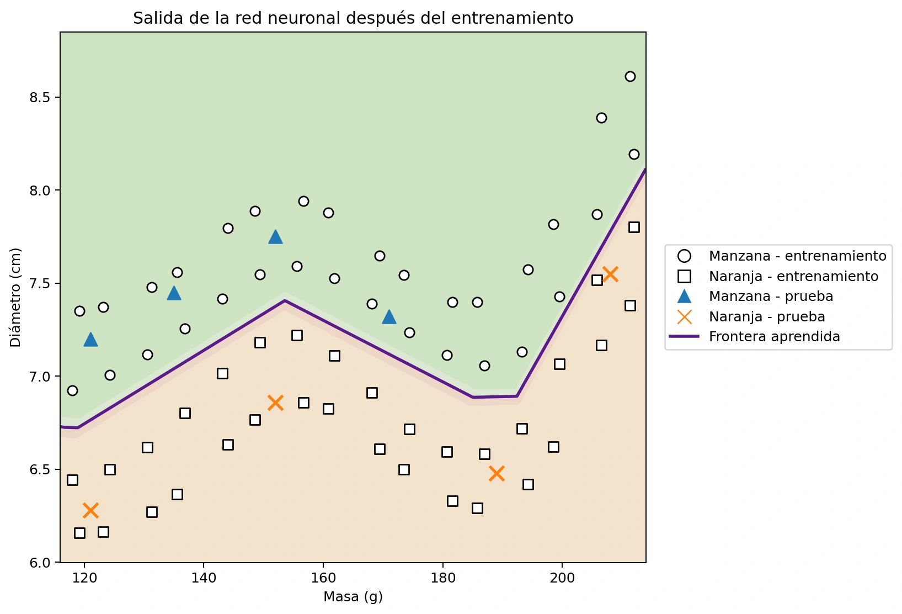

¿Cuándo puede aprender una computadora?
En la vida cotidiana tomamos decisiones de clasificación casi sin darnos cuenta. Al observar una fruta, la identificamos rápidamente como una manzana o una naranja; cuando llega un mensaje al teléfono, distinguimos una conversación legítima de publicidad no deseada; en un análisis médico, varias mediciones pueden combinarse para apoyar una decisión; y, en las instituciones financieras, se evalúan múltiples datos antes de conceder un crédito. En todos estos ejemplos, varias características se consideran conjuntamente para producir una respuesta.
En muchos programas informáticos tradicionales, las reglas que producen esa respuesta son escritas explícitamente por el programador. Este enfoque funciona bien cuando las reglas son conocidas y pueden formularse con claridad. Se vuelve menos eficaz cuando los datos son muy variables o cuando resulta difícil establecer de antemano todas las condiciones necesarias para una buena decisión. Esto conduce a una pregunta natural:
¿Podemos construir un programa que aprenda una regla de decisión
a partir de
ejemplos, en lugar de recibir la regla de antemano?
Esta es una de las ideas centrales del aprendizaje automático, un área de la inteligencia artificial dedicada a métodos que ajustan modelos a partir de datos . En un problema de aprendizaje supervisado, el algoritmo recibe ejemplos junto con sus respuestas correctas, y buscamos un modelo capaz de realizar predicciones útiles también para casos que no se utilizaron durante el entrenamiento. Entre los numerosos modelos desarrollados con este propósito, las redes neuronales artificiales han adquirido importancia en aplicaciones como el reconocimiento de imágenes, el procesamiento del lenguaje, el análisis de señales y la predicción de series temporales .
El uso de las redes neuronales como puente entre las matemáticas, la computación y la enseñanza escolar ya fue discutido en Professor de Matemática Online por Batista y Martins , quienes presentan una actividad que involucra formación docente, Python y reconocimiento de dígitos. El presente artículo sigue una vía complementaria. Nuestro objetivo principal es exponer la matemática interna de una pequeña red neuronal, comenzando por la geometría analítica y avanzando paso a paso hasta el cálculo de gradientes y una implementación manual de la retropropagación.
A pesar de la sofisticación de las aplicaciones modernas, el núcleo matemático de una red neuronal puede introducirse mediante ideas relativamente familiares. En un nivel básico, una red neuronal es una composición de funciones cuyos parámetros se ajustan a partir de datos. Comenzamos con un problema geométrico sencillo, reinterpretamos una recta separadora como una neurona artificial, conectamos varias neuronas, estudiamos el papel de las funciones de activación y mostramos cómo las derivadas pueden utilizarse para ajustar automáticamente los parámetros de la red. Finalmente, implementamos en Python un ejemplo pequeño pero completo, manteniendo una correspondencia directa entre las ecuaciones y el código.
Representación matemática del problema
Para comprender cómo funciona una red neuronal, comenzamos con un problema deliberadamente sencillo: distinguir manzanas de naranjas. Una fruta posee muchas características que podrían ser útiles para esta tarea, como el color, la masa, el diámetro, la textura y el aroma. Sin embargo, un modelo matemático inicial no necesita incluir toda esa complejidad. Utilizaremos únicamente dos cantidades fáciles de medir: la masa, en gramos, y el diámetro, en centímetros.
Por lo tanto, cada fruta se representará mediante un par ordenado \[(x_1,x_2),\] donde \[x_1=\text{masa} \qquad\text{y}\qquad x_2=\text{diámetro}.\]
Así, el par \((155,\;7.2)\) representa una fruta con masa de \(155\) g y diámetro de \(7.2\) cm. Al sustituir el objeto físico por dos mediciones numéricas, asociamos cada fruta con un punto del plano cartesiano: la primera coordenada indica su masa y la segunda su diámetro. La Figura 1 ilustra esta representación para un conjunto hipotético de manzanas y naranjas.

Esta transformación cambia la naturaleza aparente del problema. En lugar de preguntar directamente cómo reconocer una manzana o una naranja, podemos formular una pregunta geométrica: ¿cómo separar en el plano los puntos que pertenecen a las dos clases? Este cambio de perspectiva es fundamental en el aprendizaje automático. Las imágenes, los textos, los sonidos y las señales experimentales deben convertirse en representaciones numéricas antes de poder ser procesados por un algoritmo. En nuestro ejemplo, cada objeto tiene solo dos coordenadas; en aplicaciones reales, una representación puede contener cientos, miles o incluso millones de componentes. El principio es el mismo: cada ejemplo se asocia con una colección de números, y el modelo busca una regla que transforme esa representación en la respuesta deseada.
Comenzamos con la regla geométrica más sencilla disponible y preguntamos si una única recta puede separar adecuadamente los puntos correspondientes a las manzanas de los correspondientes a las naranjas.
Una recta como clasificador
Una vez que cada fruta ha sido representada por un punto del plano cartesiano, la clasificación se convierte en un problema geométrico: ¿puede una recta separar las manzanas de las naranjas? Esta pregunta recoge la idea básica de una importante familia de métodos de aprendizaje automático conocidos como clasificadores lineales.
Consideremos una recta que atraviesa la nube de datos, como se ilustra en la Figura 2. La recta divide el plano en dos semiplanos. Si la mayoría de los puntos de las manzanas se encuentran de un lado y la mayoría de los puntos de las naranjas del otro, la posición de una nueva fruta con respecto a la recta puede utilizarse como regla de clasificación. Después de medir su masa y su diámetro, representamos la fruta mediante un punto y determinamos en qué lado de la recta se encuentra dicho punto.

En el plano cartesiano \((x_1,x_2)\), una recta puede describirse mediante \[w_1x_1+w_2x_2+b=0, \qquad (w_1,w_2)\neq(0,0).\]
El vector \((w_1,w_2)\) es perpendicular a la recta y, por tanto, determina su orientación, mientras que el parámetro \(b\) contribuye a determinar su posición. Esta representación presenta una pequeña redundancia: multiplicar \(w_1\), \(w_2\) y \(b\) por una misma constante no nula produce exactamente la misma recta. En consecuencia, los parámetros que describen la frontera no son únicos. Su interpretación numérica también depende de la escala de las variables. Como la masa se mide en gramos y el diámetro en centímetros, los valores numéricos de \(w_1\) y \(w_2\) no deben compararse sin tener en cuenta las diferentes unidades.
La propia ecuación de la recta proporciona una forma sencilla de determinar de qué lado de la frontera se encuentra un punto. Definimos la puntuación \[s(x_1,x_2)=w_1x_1+w_2x_2+b.\]
Si \(s(x_1,x_2)=0\), el punto está sobre la recta. Si \(s(x_1,x_2)>0\), se encuentra en un semiplano; si \(s(x_1,x_2)<0\), se encuentra en el otro. Si decidimos que las puntuaciones positivas corresponden a manzanas y las negativas a naranjas, la regla se convierte en \[\begin{cases} s(x_1,x_2)\geq 0 & \Longrightarrow \text{manzana},\\ s(x_1,x_2)<0 & \Longrightarrow \text{naranja}. \end{cases}\]
Por ejemplo, consideremos la frontera definida por \[w_1=\frac{1}{10}, \qquad w_2=2, \qquad b=-30.\] Para una fruta con masa de \(160\) g y diámetro de \(7.8\) cm, \[\begin{aligned} s &=\frac{1}{10}\times160+2\times7.8-30\\ &=16+15.6-30\\ &=1.6. \end{aligned}\] Como la puntuación es positiva, el punto se encuentra en el semiplano que asociamos con las manzanas. Por lo tanto, este clasificador etiquetaría la fruta como una manzana.
No toda elección de \(w_1\), \(w_2\) y \(b\) produce una buena clasificación. Algunas rectas separan mal los dos grupos, mientras que otras cometen menos errores. El problema de aprendizaje consiste precisamente en utilizar ejemplos previamente etiquetados para determinar valores de los parámetros que reduzcan una medida del error del modelo. En lugar de programar directamente la posición de la recta, queremos que el algoritmo ajuste sus coeficientes a partir de los datos.
Una sola recta puede funcionar bien cuando las clases son aproximadamente separables linealmente. Conjuntos de datos más complejos pueden requerir una frontera no lineal. Antes de abordar esta limitación, reinterpretamos el clasificador que acabamos de construir como una unidad computacional elemental: una neurona artificial.
La neurona artificial
En la sección anterior, la expresión \[s=w_1x_1+w_2x_2+b\] se utilizó para determinar de qué lado de una recta se encuentra una fruta. La misma expresión puede considerarse como la primera etapa del cálculo realizado por una neurona artificial. Una neurona recibe entradas numéricas, las combina utilizando pesos y un sesgo, y después aplica una función matemática para obtener su salida.
En nuestro ejemplo, las entradas son la masa \(x_1\) y el diámetro \(x_2\). Cada entrada se multiplica por un parámetro llamado peso; los productos se suman junto con un término constante \(b\), llamado sesgo. La Figura 3 muestra esquemáticamente este cálculo.

Los pesos determinan cómo afectan a la puntuación los cambios en las entradas. Si \(x_2\) y todas las demás cantidades se mantienen fijas, una variación \(\Delta x_1\) modifica \(s\) en \(w_1\Delta x_1\). De forma análoga, una variación \(\Delta x_2\) modifica la puntuación en \(w_2\Delta x_2\). El signo también es importante: un peso positivo hace que un aumento de la entrada aumente la puntuación, mientras que un peso negativo produce el efecto contrario. Esta interpretación debe utilizarse con cuidado cuando las variables tienen unidades y escalas diferentes. Por esta razón, las implementaciones prácticas suelen normalizar o estandarizar los datos de entrada antes del entrenamiento.
El sesgo \(b\) es el término constante de la transformación afín. Geométricamente, permite desplazar la frontera de decisión. Si \(b=0\), la ecuación \[w_1x_1+w_2x_2=0\] obliga a la recta a pasar por el origen. Con un sesgo, la frontera puede desplazarse a otras posiciones. De forma equivalente, cuando \(x_1=x_2=0\), la puntuación es simplemente \(s=b\).
La puntuación no tiene por qué ser la salida final de la neurona. En general, se le aplica una función de activación \(g\): \[\widehat{y}=g(s)=g\left(w_1x_1+w_2x_2+b\right).\] Así, el cálculo tiene dos etapas, \[\begin{aligned} s &= w_1x_1+w_2x_2+b,\\[4pt] \widehat{y} &= g(s). \end{aligned}\]
Utilizando los valores de los parámetros de la sección anterior obtenemos \(s=1.6\). Si elegimos la función escalón \[g(s)= \begin{cases} 1, & s\geq0,\\ 0, & s<0, \end{cases}\] entonces \(\widehat{y}=g(1.6)=1\). Según nuestra convención, la fruta se clasifica como una manzana. Con esta activación, la decisión cambia cuando \(s\) cruza el cero, por lo que la frontera entre las clases es exactamente \[w_1x_1+w_2x_2+b=0.\]
Una única neurona es, por tanto, un objeto matemático sencillo con parámetros ajustables. Su verdadera importancia surge al conectar muchas unidades de este tipo. Sin embargo, antes de construir una red, necesitamos comprender por qué la función de activación es esencial.
¿Por qué necesitamos una función de activación?
Una neurona calcula primero una puntuación mediante una transformación afín y solo después aplica una función de activación. Esta segunda etapa es esencial para que una red neuronal pueda representar relaciones complicadas. Para ver por qué, imaginemos una red en la que no se utilizan funciones de activación. Cada unidad tendría entonces la forma \[y=w_1x_1+w_2x_2+b.\]
Para una ilustración unidimensional, supongamos que una primera unidad produce \[h=ax+b\] y una segunda calcula \[y=ch+d.\] La sustitución da \[y=c(ax+b)+d=acx+(cb+d),\] que sigue siendo una función afín de \(x\). La misma afirmación es válida en varias dimensiones: una composición de transformaciones afines sigue siendo afín. Por lo tanto, añadir muchas capas sin una operación no lineal no hace que la red sea fundamentalmente más expresiva; toda la composición podría sustituirse por una única transformación afín.
Una función de activación rompe esta limitación. Después de calcular la puntuación \(s\), la neurona aplica un mapa, normalmente no lineal, \[h=g(s).\] Cuando se conectan varias unidades de este tipo, la composición resultante ya no puede reducirse a una sola transformación afín. Esto permite que la red construya fronteras de decisión más complejas.
La activación más sencilla es la función escalón, \[g(s)= \begin{cases} 1, & s\geq0,\\ 0, & s<0. \end{cases}\] Produce una decisión binaria y es muy útil para comprender la clasificación. Sin embargo, su derivada es cero para \(s\neq0\) y no está definida en \(s=0\). Como el entrenamiento basado en gradientes utiliza derivadas para determinar cómo deben cambiar los parámetros, la función escalón no es adecuada para ese mecanismo de entrenamiento.
Una alternativa es la función sigmoide, \[\sigma(s)=\frac{1}{1+e^{-s}}.\] Transforma todo número real en un valor estrictamente comprendido entre \(0\) y \(1\). Para valores muy negativos de \(s\), la salida se aproxima a \(0\); para valores muy positivos, se aproxima a \(1\); entre ambos extremos, la transición es suave. La sigmoide es diferenciable en todo punto y \[\sigma'(s)=\sigma(s)\bigl(1-\sigma(s)\bigr).\] Como sus salidas se encuentran entre \(0\) y \(1\), se utiliza con frecuencia en la capa de salida de un clasificador binario. Bajo una formulación probabilística y con una función de pérdida adecuada, la salida puede interpretarse como una estimación de la probabilidad de la clase representada por \(1\). Sin embargo, en las capas ocultas la sigmoide puede crear una dificultad: para entradas de gran magnitud, su derivada se vuelve muy pequeña, contribuyendo al problema del gradiente desvaneciente en redes profundas.
Una activación muy utilizada en las capas ocultas es ReLU (Rectified Linear Unit), \[\operatorname{ReLU}(s)=\max(0,s) = \begin{cases} 0, & s<0,\\ s, & s\geq0. \end{cases}\] Aunque está compuesta por dos tramos lineales, ReLU no es globalmente lineal. Su derivada es \(0\) para \(s<0\) y \(1\) para \(s>0\). En \(s=0\) la derivada usual no existe, y las implementaciones de software adoptan una convención para el gradiente. Para entradas positivas, la derivada no disminuye a medida que crece \(s\), evitando uno de los mecanismos de saturación de la sigmoide.
La Figura 4 compara visualmente estas tres activaciones: el salto abrupto de la función escalón, la transición suave de la sigmoide y el cambio de pendiente de ReLU.

Sus principales propiedades se resumen a continuación.
| Función | Salida | Derivada | Uso típico |
|---|---|---|---|
| Escalón | \(\{0,1\}\) | Cero para \(s\neq0\); no definida en \(s=0\) | Modelos históricos y ejemplos didácticos |
| Sigmoide | \((0,1)\) | Existe para todo \(s\) | Capa de salida en clasificación binaria |
| ReLU | \([0,\infty)\) | \(0\) para \(s<0\) y \(1\) para \(s>0\) | Capas ocultas |
Los detalles de estas funciones difieren, pero su papel conceptual común consiste en introducir no linealidad. Esa no linealidad es la que permite que la pequeña red de la sección siguiente represente relaciones que una sola recta no puede capturar.
Para los lectores que deseen profundizar, Haykin ofrece un tratamiento clásico de las redes neuronales, mientras que Goodfellow, Bengio y Courville analizan las funciones de activación y el entrenamiento de redes profundas en un contexto más amplio. El texto de Nielsen, disponible gratuitamente , resulta especialmente accesible para desarrollar intuición sobre neuronas, activaciones y aprendizaje.
Construcción de una pequeña red neuronal
Consideramos ahora una red con dos entradas, una capa oculta que contiene tres neuronas y una neurona de salida. Las entradas siguen siendo \[x_1=\text{masa}, \qquad x_2=\text{diámetro},\] y ambas se suministran a cada neurona oculta, como se muestra en la Figura 5.

Sean \(h_1\), \(h_2\) y \(h_3\) las salidas de la capa oculta. Cada neurona recibe las mismas dos entradas, pero tiene sus propios pesos y su propio sesgo: \[\begin{aligned} h_1&=g\left(w_{11}x_1+w_{12}x_2+b_1\right),\\[4pt] h_2&=g\left(w_{21}x_1+w_{22}x_2+b_2\right),\\[4pt] h_3&=g\left(w_{31}x_1+w_{32}x_2+b_3\right). \end{aligned}\]
Aunque las tres neuronas reciben la misma masa y el mismo diámetro, pueden producir respuestas diferentes porque sus parámetros son distintos. Durante el entrenamiento, esos parámetros se ajustan para que las activaciones intermedias resulten útiles para la clasificación.
Las tres cantidades \(h_1\), \(h_2\) y \(h_3\) se envían después a la neurona de salida, que calcula \[s_{\mathrm{out}}=v_1h_1+v_2h_2+v_3h_3+c\] y produce \[\widehat{y}=g_{\mathrm{out}}\left(s_{\mathrm{out}}\right).\] Para nuestro problema binario, utilizamos una salida sigmoide: \[\widehat{y}=\sigma\left(v_1h_1+v_2h_2+v_3h_3+c\right), \qquad 0<\widehat{y}<1.\]
Utilizando \(y=1\) para manzana y \(y=0\) para naranja, un umbral de \(0.5\) proporciona la decisión de clase \[\widehat{y}\geq0.5 \Longrightarrow \text{manzana}, \qquad \widehat{y}<0.5 \Longrightarrow \text{naranja}.\] Por tanto, los valores próximos a \(1\) se asocian fuertemente con las manzanas, mientras que los valores próximos a \(0\) se asocian con las naranjas. Como se señaló antes, interpretar numéricamente \(\widehat{y}\) como una probabilidad requiere hipótesis adicionales sobre el modelo y su entrenamiento. Para la regla de clasificación utilizada aquí, basta considerar \(\widehat{y}\) como una salida continua de la red.
La característica central de esta arquitectura es la representación intermedia \[(x_1,x_2) \longrightarrow (h_1,h_2,h_3) \longrightarrow \widehat{y}.\] La red recibe dos características y construye tres nuevas cantidades antes de producir la respuesta final. Estas activaciones no se eligen manualmente: dependen de los pesos y sesgos y, por tanto, cambian a medida que se entrenan los parámetros.
A pesar de su pequeño tamaño, la red ya posee trece parámetros ajustables. Las tres neuronas ocultas contienen \[3(2+1)=9\] parámetros, y la neurona de salida aporta \[3+1=4.\] Por lo tanto, \[9+4=13.\]
El mismo recuento resulta transparente en notación matricial. Definimos \[\mathbf{x}= \begin{bmatrix} x_1\\x_2 \end{bmatrix}, \qquad W^{(1)}= \begin{bmatrix} w_{11}&w_{12}\\ w_{21}&w_{22}\\ w_{31}&w_{32} \end{bmatrix}, \qquad \mathbf{b}^{(1)}= \begin{bmatrix} b_1\\b_2\\b_3 \end{bmatrix}.\] Entonces, la capa oculta puede escribirse de forma compacta como \[\mathbf{h}=g\left(W^{(1)}\mathbf{x}+\mathbf{b}^{(1)}\right),\] donde \(g\) actúa componente a componente. Para la salida, \[\widehat{y} = \sigma\left(W^{(2)}\mathbf{h}+b^{(2)}\right),\] con \[W^{(2)}= \begin{bmatrix} v_1&v_2&v_3 \end{bmatrix}.\]
Esta notación anticipa la estructura que aparecerá en el programa en Python. Cuando presentamos una fruta en la entrada y calculamos las activaciones sucesivas hasta obtener \(\widehat{y}\), realizamos una propagación hacia delante o un paso hacia delante. La pregunta central permanece: ¿cómo pueden determinarse automáticamente los trece parámetros para que las predicciones se ajusten a los datos?
¿Cómo aprende una red neuronal?
Los pesos y sesgos de la red no se conocen de antemano: se ajustan a partir de ejemplos con etiquetas de clase conocidas. El aprendizaje consiste en repetir la propagación hacia delante, el cálculo de la pérdida, la determinación de los gradientes y la actualización de los parámetros (Figura 6). La regla de la cadena permite establecer cómo cada peso y sesgo influye en una pequeña variación de la pérdida.
Para ajustar los parámetros necesitamos primero una medida numérica de la discrepancia entre la predicción y la respuesta esperada. Esta es la función de pérdida: asigna una penalización a cada predicción y permite comparar distintas elecciones de pesos y sesgos. A diferencia de contar únicamente los errores de clasificación, una pérdida continua distingue predicciones más próximas o más alejadas de la etiqueta y ofrece derivadas que orientan el entrenamiento.
Consideremos una fruta de masa \(140\) g y diámetro \(7.0\) cm, identificada como naranja (\(y=0\)). Denotando por \(\widehat y\in(0,1)\) la salida de la red, empleamos la pérdida cuadrática para un ejemplo:
\[\label{eq:perda} E=\frac12(\widehat y-y)^2.\]
Aquí \(y\) es la clase verdadera y \(\widehat y\) la predicción. La pérdida es no negativa y tiende a cero cuando la predicción se aproxima a la etiqueta; una mayor diferencia \(|\widehat y-y|\) implica una penalización mayor. Para una naranja, las predicciones \(0.80\) y \(0.60\) producen \(E=0.32\) y \(E=0.18\), respectivamente. Ambas clasifican erróneamente la fruta como manzana con el umbral \(0.5\), pero la pérdida distingue cuál está más cerca del objetivo. El factor \(1/2\) no modifica el mínimo, aunque simplifica la derivación.
La red debe aprender de numerosos ejemplos, no de una sola fruta. Para \(N\) observaciones definimos la pérdida media
\[\label{eq:perda_media} J=\frac1N\sum_{i=1}^{N}E_i.\]
Este promedio resume el ajuste sobre el conjunto de entrenamiento y es la cantidad que intentamos reducir modificando los parámetros. Minimizar \(J\) no garantiza por sí solo buenas predicciones con datos nuevos; volveremos a este aspecto al tratar la generalización. Conservamos la pérdida cuadrática de la ecuación perda por su sencillez algebraica y, más adelante, la comparamos con la entropía cruzada binaria sin modificar el experimento computacional [2, 3].

Si \(\theta\) representa un peso o sesgo, la derivada \(\partial J/\partial\theta\) mide la sensibilidad local de la pérdida media con respecto a ese parámetro. Un paso de descenso del gradiente se escribe
\[\label{eq:descida} \theta_{\mathrm{new}}=\theta_{\mathrm{old}}-\eta\frac{\partial J}{\partial\theta},\qquad \eta>0.\]
La tasa de aprendizaje \(\eta\) controla el tamaño del paso: valores excesivamente pequeños pueden ralentizar la convergencia y valores demasiado grandes pueden provocar oscilaciones o divergencia. Si los parámetros se actualizan después de cada observación, como en el código de la Sección 8, se sustituye \(\partial J/\partial\theta\) por \(\partial E_i/\partial\theta\). Esta es la forma de descenso estocástico del gradiente (SGD) empleada aquí.
La regla de la cadena en la red 2–3–1
Utilizamos la red de la Figura [fig:pequena_rede], con ReLU en las tres neuronas ocultas y sigmoide en la salida. Dado que las entradas representan masa (gramos) y diámetro (centímetros), sus escalas numéricas son distintas. Para evitar que esta diferencia perjudique el condicionamiento del ajuste, transformamos cada característica según \(x_j^{\ast}=(x_j-\mu_j)/\sigma_j\), con \(\mu_j\) y \(\sigma_j>0\) como media y desviación estándar de referencia. Obtenemos así entradas adimensionales de escalas comparables, lo que facilita elegir el paso de optimización. En el experimento computacional estas estadísticas se calculan únicamente con los datos de entrenamiento, evitando la filtración de información del conjunto de prueba. Para simplificar las cuentas del ejemplo siguiente emplearemos centros y escalas fijados de antemano.
Para la entrada normalizada \(\mathbf{x}^{\ast}=(x_1^{\ast},x_2^{\ast})^{\mathsf T}\), la propagación hacia delante es
\[\label{eq:forward} \begin{aligned} \mathbf{z}^{(1)}&=W^{(1)}\mathbf{x}^{\ast}+\mathbf{b}^{(1)}, &\mathbf{h}&=\operatorname{ReLU}(\mathbf{z}^{(1)}),\\ z^{(2)}&=W^{(2)}\mathbf{h}+c, &\widehat y&=\sigma(z^{(2)}). \end{aligned}\]
Aquí \(c=b^{(2)}\) es el sesgo de salida y \(W^{(2)}=(v_1,v_2,v_3)\). La retropropagación comienza en la neurona de salida mediante aplicaciones sucesivas de la regla de la cadena:
\[\label{eq:delta_saida} \begin{aligned} \delta^{(2)}:=\frac{\partial E}{\partial z^{(2)}} &=\underbrace{\frac{\partial E}{\partial\widehat y}}_{\widehat y-y} \underbrace{\frac{\partial\widehat y}{\partial z^{(2)}}}_{\widehat y(1-\widehat y)} =(\widehat y-y)\widehat y(1-\widehat y),\\ \frac{\partial E}{\partial v_j}&=\delta^{(2)}h_j, \qquad \frac{\partial E}{\partial c}=\delta^{(2)}. \end{aligned}\]
Como cada activación \(h_j\) depende también de sus pesos y sesgo, calculamos las sensibilidades de las neuronas ocultas:
\[\label{eq:delta_oculta} \begin{aligned} \delta_j^{(1)}:=\frac{\partial E}{\partial z_j^{(1)}} &=\delta^{(2)}v_j\,\operatorname{ReLU}'(z_j^{(1)}),\\ \frac{\partial E}{\partial w_{jk}} &=\delta_j^{(1)}x_k^{\ast},\qquad \frac{\partial E}{\partial b_j}=\delta_j^{(1)}. \end{aligned}\]
La ReLU no es diferenciable en cero; cuando sea necesario adoptamos \(\operatorname{ReLU}'(0)=0\) como convención computacional. Las cantidades \(\delta^{(2)}\) y \(\delta_j^{(1)}\) son sensibilidades locales de la pérdida, no «errores físicos» que viajen por la red. El algoritmo las reutiliza para obtener los trece gradientes sin repetir toda la diferenciación para cada peso.
Una actualización numérica completa de los parámetros
Para facilitar las cuentas, solo en este ejemplo, fijamos centros y escalas de \(160\) g y \(20\) g para la masa, y \(7.5\) cm y \(0.5\) cm para el diámetro. La fruta \((140\,\mathrm{g},7.0\,\mathrm{cm})\) corresponde a la entrada adimensional
\[\label{eq:exemplo_entrada} \mathbf{x}^{\ast}=\begin{bmatrix}(140-160)/20\\(7.0-7.5)/0.5\end{bmatrix} =\begin{bmatrix}-1\\-1\end{bmatrix}.\]
Estos valores se fijan para la demostración; en la Sección 8, la media y la desviación estándar se calculan directamente a partir del conjunto de entrenamiento.
Elegimos los trece parámetros iniciales
\[\label{eq:param_iniciais} W^{(1)}=\begin{bmatrix} 0.2&0.1\\-0.3&0.2\\0.1&-0.4 \end{bmatrix},\quad \mathbf{b}^{(1)}=\begin{bmatrix}\phantom{-}0.5\\\phantom{-}0.2\\-0.5\end{bmatrix},\quad W^{(2)}=\begin{bmatrix}\phantom{-}0.5&-0.4&\phantom{-}0.3\end{bmatrix},\quad c=1.\]
La ecuación forward proporciona, sucesivamente,
\[\label{eq:exemplo_forward} \begin{gathered} \mathbf{z}^{(1)}=(0.2,\;0.3,\;-0.2)^{\mathsf T},\qquad \mathbf{h}=(0.2,\;0.3,\;0)^{\mathsf T},\\ z^{(2)}=0.5(0.2)-0.4(0.3)+1=0.98,\\ \widehat y=\sigma(0.98)\simeq0.727108,\qquad E\simeq0.264343. \end{gathered}\]
La predicción inicial asigna la clase equivocada. Por las ecuaciones delta_saida y delta_oculta,
\[\label{eq:exemplo_gradientes} \begin{gathered} \delta^{(2)}\simeq0.144274,\qquad \boldsymbol{\delta}^{(1)}\simeq(0.072137,\;-0.057710,\;0)^{\mathsf T},\\ \frac{\partial E}{\partial W^{(2)}}\simeq (0.028855,\;0.043282,\;0),\qquad \frac{\partial E}{\partial W^{(1)}}\simeq \begin{bmatrix}-0.072137&-0.072137\\\phantom{-}0.057710&\phantom{-}0.057710\\\phantom{-}0&\phantom{-}0\end{bmatrix}. \end{gathered}\]
La tercera neurona oculta está inactiva (\(z_3^{(1)}<0\)); por tanto, los gradientes de sus pesos de entrada y de su sesgo son nulos en este paso. Con \(\eta=0.05\), aplicamos \(\theta_{\mathrm{new}}=\theta_{\mathrm{old}}-0.05\,\partial E/\partial\theta\) simultáneamente a todos los parámetros. La Tabla 1 presenta algunas de las trece actualizaciones; las restantes siguen las mismas fórmulas.
| Parámetro \(\theta\) | Inicial | \(\partial E/\partial\theta\) | Actualizado |
|---|---|---|---|
| \(v_1\) | \(0.500000\) | \(0.028855\) | \(0.498557\) |
| \(v_2\) | \(-0.400000\) | \(0.043282\) | \(-0.402164\) |
| \(c\) | \(1.000000\) | \(0.144274\) | \(0.992786\) |
| \(w_{11}\) | \(0.200000\) | \(-0.072137\) | \(0.203607\) |
| \(w_{21}\) | \(-0.300000\) | \(0.057710\) | \(-0.302885\) |
| \(b_1\) | \(0.500000\) | \(0.072137\) | \(0.496393\) |
| \(w_{31}\) | \(0.100000\) | \(0\) | \(0.100000\) |
Una nueva propagación hacia delante utilizando todos los parámetros actualizados da \(\widehat y_{\mathrm{new}}\simeq0.723717\) y \(E_{\mathrm{new}}\simeq0.261883\): la pérdida disminuye tras un único paso. La clasificación todavía no cambia, como cabe esperar; aprender exige repetir el proceso con numerosos ejemplos y épocas.
Error cuadrático y entropía cruzada
El error cuadrático permite explicar claramente la regla de la cadena, pero para clasificación binaria con salida sigmoide es habitual utilizar también la entropía cruzada binaria. Para \(y\in\{0,1\}\) y \(\widehat y=\sigma(z)\), la pérdida por observación es
\[\label{eq:entropia_cruzada} E_{\mathrm{CE}}=-y\ln\widehat y-(1-y)\ln(1-\widehat y).\]
Mientras que el error cuadrático penaliza la discrepancia numérica entre predicción y etiqueta, la entropía cruzada penaliza las predicciones que asignan poca probabilidad a la etiqueta observada, interpretando \(\widehat y\) como la probabilidad de la clase \(1\). La diferencia más importante para el entrenamiento surge al derivar con respecto al valor \(z\) de la neurona de salida. Usando la regla de la cadena y \(\sigma'(z)=\widehat y(1-\widehat y)\) obtenemos
\[\label{eq:derivada_entropia_cruzada} \begin{aligned} \frac{\partial E_{\mathrm{CE}}}{\partial z} &=\left(-\frac{y}{\widehat y}+\frac{1-y}{1-\widehat y}\right) \widehat y(1-\widehat y) =\widehat y-y,\\ \frac{\partial E_{\mathrm{SE}}}{\partial z} &=(\widehat y-y)\widehat y(1-\widehat y), \qquad E_{\mathrm{SE}}=\tfrac12(\widehat y-y)^2. \end{aligned}\]
Para ilustrar únicamente esta diferencia, supongamos una predicción \(\widehat y=0.80\) para una naranja (\(y=0\)). En ese caso, \(E_{\mathrm{SE}}=0.32\) y \(E_{\mathrm{CE}}=-\ln(0.20)\simeq1.60944\), mientras que sus derivadas con respecto a \(z\) son \(0.128\) y \(0.80\). Con \(\eta=0.05\), la actualización aislada del sesgo de salida, cuyo gradiente es \(\partial E/\partial c=\partial E/\partial z\), sería \(\Delta c=-0.0064\) con error cuadrático o \(\Delta c=-0.0400\) con entropía cruzada. La predicción ilustrativa de \(0.80\) no sustituye los valores obtenidos en el ejemplo numérico completo anterior.
Con entropía cruzada, el factor \(\widehat y(1-\widehat y)\) deja de multiplicar la sensibilidad de la capa de salida. Esto evita, en esa capa, una atenuación adicional del gradiente por saturación de la sigmoide cuando la predicción es muy incorrecta. No elimina gradientes pequeños en otras capas ni garantiza un entrenamiento más rápido en todas las situaciones. Como las dos pérdidas tienen escalas distintas, sus valores no deben compararse directamente como indicadores de calidad. Conservamos el error cuadrático en el código principal para reproducir íntegramente la actualización anterior; el cuaderno suplementario incluye la comparación sin alterar el entrenamiento.
Épocas y generalización
Una pasada completa por los ejemplos de entrenamiento se llama época. El programa de la siguiente sección baraja los ejemplos en cada época y actualiza los parámetros después de cada fruta. La arquitectura permanece fija, pero cambian los pesos, los sesgos y la frontera de decisión. Reducir la pérdida de entrenamiento no garantiza predicciones satisfactorias en observaciones nuevas. Esta capacidad se denomina generalización; cuando el ajuste excesivo a los ejemplos perjudica las nuevas predicciones, hablamos de sobreajuste. En estudios más amplios, conjuntos separados de entrenamiento, validación y prueba ayudan a elegir hiperparámetros y evaluar el modelo con menor sesgo [2, 3].
De las matemáticas a Python
Implementaremos ahora, utilizando únicamente NumPy, la
propagación hacia delante, la regla de la cadena y las actualizaciones
estocásticas derivadas en la Sección 7 [4]. Para obtener una
frontera de decisión no lineal ampliamos la capa oculta de tres a doce
neuronas ReLU. La red \(2\)–\(12\)–\(1\)
contiene \(12(2+1)+(12+1)=49\)
parámetros, pero sigue exactamente las mismas ecuaciones.
Datos sintéticos para una demostración
El experimento utiliza \(64\) ejemplos sintéticos de entrenamiento organizados en cuatro franjas de \(16\) puntos en el plano masa–diámetro, además de ocho observaciones para una prueba meramente ilustrativa. Dos franjas de manzanas se sitúan por encima de una curva de referencia y dos de naranjas por debajo. Pequeños desplazamientos deterministas evitan una alineación perfectamente regular. Los valores se eligieron únicamente para obtener una distribución visualmente plausible y una frontera de decisión no lineal; no son mediciones experimentales ni constituyen un modelo físico de frutas.
La curva de referencia se emplea exclusivamente para generar los ejemplos. No se entrega a la red, no aparece en la pérdida y no interviene en la retropropagación. El entrenamiento utiliza solo los pares masa–diámetro y sus etiquetas. La fórmula generadora y los desplazamientos figuran en el Apéndice A, lo que permite reproducir exactamente los datos de la Figura 7.

La Figura 7 muestra los puntos
producidos por construct_data(); la curva discontinua
pertenece exclusivamente a la construcción sintética y no es una
frontera aprendida. Los ocho ejemplos adicionales se usan solo en la
ilustración final y no participan en el cálculo de las estadísticas de
normalización.
Normalización y decisiones de entrenamiento
Dado que la masa y el diámetro poseen unidades y escalas diferentes, cada entrada se transforma en una variable adimensional:
\[\label{eq:padronizacao} x_j^{\ast}=\frac{x_j-\mu_j}{\sigma_j},\quad \mu_j=\frac1N\sum_{i=1}^N x_{ij},\quad \sigma_j=\sqrt{\frac1N\sum_{i=1}^N(x_{ij}-\mu_j)^2}.\]
La media \(\mu_j\) centra la característica \(j\) y la desviación estándar \(\sigma_j\) la reescala; en este ejemplo \(N=64\). Ambas estadísticas se calculan solo con los datos de entrenamiento y después se aplican sin cambios a los de prueba. Se supone \(\sigma_j>0\). La misma transformación se utiliza para las entradas de la red y para la malla de predicción.
Inicializamos los pesos con una distribución normal de media cero,
desviación estándar \(0.1\) y semilla
aleatoria \(42\). Los valores pequeños
rompen la simetría entre las neuronas ocultas; la distribución normal es
una elección sencilla, no una prescripción universal. En redes mayores,
la escala de inicialización debe considerar la arquitectura y las
activaciones. Los sesgos comienzan en cero. En \(s=0\), ReLU no tiene derivada; la función
relu_derivative() adopta cero por convención, sin modificar
la definición matemática ni garantizar por sí sola la convergencia.
Empleamos \(\eta=0.05\) como elección conservadora, no como tasa óptima. Un análisis elemental de sensibilidad con datos y semilla fijos produce la Tabla 2 tras \(1000\) épocas. La tasa mayor estudiada converge más rápidamente en este conjunto, pero ello no demuestra su idoneidad general. Mantenemos \(0.05\) porque proporciona entrenamiento estable y una historia de pérdida fácil de inspeccionar.
| \(\eta\) | Pérdida media \(J\) | Correctos de \(64\) |
|---|---|---|
| \(0.005\) | \(0.041871\) | \(55\) |
| \(0.05\) | \(0.006485\) | \(64\) |
| \(0.2\) | \(0.000106\) | \(64\) |
Implementación íntegra en Python
El programa completo se presenta en los Códigos 1–10, organizados por
función y en orden de ejecución. Estos diez bloques consecutivos
constituyen el archivo neural_network.py, que también
acompaña el material suplementario.
01 — Preparación del entorno
"""Ejemplo didáctico: clasificación de frutas con una red 2-12-1.
Dependencias: numpy y matplotlib. Ejecución: python neural_network.py.
"""
import numpy as np
import matplotlib.pyplot as plt
from matplotlib.lines import Line2D
02 — Activación ReLU
def relu(s):
"""Activación de la capa oculta: ReLU(s) = max(0,s)."""
return np.maximum(0, s)
03 — Derivada computacional de ReLU
def relu_derivative(s):
# ReLU no es diferenciable en s=0; se fija su derivada computacional en 0.
# Esta convención solo define el paso de retropropagación en dicho punto.
return (s > 0).astype(float)
04 — Activación sigmoide
def sigmoid(s):
"""Activación de salida, con valores entre 0 y 1."""
return 1 / (1 + np.exp(-s))
05 — Curva auxiliar para generar los datos
def reference_curve(m):
# Curva artificial (cm): desplazamiento, elevación gaussiana y ascenso logístico.
# Las constantes se eligieron para construir una curva de referencia no lineal;
# no son medidas experimentales ni parámetros ajustados.
return (6.68 + 0.74*np.exp(-((m-155)/20)**2)
+ 1.50/(1 + np.exp(-(m-202)/5)))
06 — Datos sintéticos de entrenamiento y prueba ilustrativa
def construct_data():
# 16 masas en cada una de cuatro franjas: a1, a2, l1, l2.
masses_1 = np.linspace(118, 212, 16)
# Pequeños desplazamientos deterministas evitan masas idénticas.
masses_2 = masses_1 + np.array([
1.2, -1.1, 0.8, -1.3, 1.0, -0.8, 1.1, -1.0,
1.3, -0.9, 0.9, -1.2, 1.0, -1.0, 0.8, -0.7
])
k = np.arange(16)
# Manzanas: dos franjas sobre la curva, con pequeñas variaciones en cm.
a1 = np.column_stack([
masses_1,
reference_curve(masses_1) + 0.22 + 0.05*np.sin(0.8*k)
])
a2 = np.column_stack([
masses_2,
reference_curve(masses_2) + 0.58 + 0.06*np.cos(0.45*k)
])
# Naranjas: dos franjas bajo la curva de referencia.
l1 = np.column_stack([
masses_1,
reference_curve(masses_1) - (0.22 + 0.04*np.cos(0.7*k))
])
l2 = np.column_stack([
masses_2,
reference_curve(masses_2) - (0.55 + 0.05*np.sin(0.5*k))
])
X_train = np.vstack([a1, a2, l1, l2])
y_train = np.array([1.0]*32 + [0.0]*32)
# Ocho ejemplos ilustrativos; no constituyen una prueba estadística amplia.
X_test = np.array([
[121.0, 7.20], [135.0, 7.45],
[152.0, 7.75], [171.0, 7.32],
[121.0, 6.28], [152.0, 6.86],
[189.0, 6.48], [208.0, 7.55]
])
y_test = np.array([1, 1, 1, 1, 0, 0, 0, 0], dtype=float)
return X_train, y_train, X_test, y_test
07 — Predicciones de la propagación hacia delante
def predict(X, mean, std, W1, b1, W2, b2):
# x_j^* = (x_j - mu_j)/sigma_j, con estadísticas del conjunto de entrenamiento.
Xn = (X - mean) / std
# Paso hacia delante en notación matricial (una fila por fruta).
h = relu(Xn @ W1.T + b1)
return sigmoid(h @ W2 + b2)
08 — Entrenamiento por retropropagación y descenso del gradiente
def train(Xn, y_train, eta=0.05, n_epochs=6000, seed=42):
rng = np.random.default_rng(seed)
# Los pesos aleatorios pequeños rompen la simetría entre neuronas;
# los sesgos comienzan en cero. La escala 0.1 tiene fines didácticos.
W1 = 0.1 * rng.standard_normal((12, 2))
b1 = np.zeros(12)
W2 = 0.1 * rng.standard_normal(12)
b2 = 0.0
history = []
for epoch in range(n_epochs):
# SGD: una actualización por fruta, con barajado en cada época.
for i in rng.permutation(len(Xn)):
x, target = Xn[i], y_train[i]
# Paso hacia delante: ecuaciones de las capas oculta y de salida.
z1 = W1 @ x + b1
h = relu(z1)
z2 = W2 @ h + b2
y_hat = sigmoid(z2)
# Retropropagación: delta2 = dE/dz2 (error cuadrático).
delta2 = (y_hat - target) * y_hat * (1 - y_hat)
dW2, db2 = delta2 * h, delta2
# delta1_j = delta2 * W2_j * ReLU'(z1_j).
delta1 = (delta2 * W2) * relu_derivative(z1)
dW1 = np.outer(delta1, x)
db1 = delta1
# Descenso estocástico: theta <- theta - eta*dE/dtheta.
# Todos los gradientes utilizan los valores ANTERIORES de los parámetros.
W1 -= eta * dW1
b1 -= eta * db1
W2 -= eta * dW2
b2 -= eta * db2
# J: pérdida media de entrenamiento al final de cada época.
h_all = relu(Xn @ W1.T + b1)
y_pred = sigmoid(h_all @ W2 + b2)
history.append(np.mean(0.5 * (y_train - y_pred)**2))
return W1, b1, W2, b2, np.array(history)
09 — Representación de la frontera aprendida
def plot_results(X_train, y_train, X_test, y_test,
mean, std, W1, b1, W2, b2, save_path=None):
# Nivel y_hat=0.5: frontera de decisión APRENDIDA.
masses = np.linspace(116, 214, 500)
diameters = np.linspace(6.0, 8.85, 500)
M, D = np.meshgrid(masses, diameters)
grid = np.column_stack([M.ravel(), D.ravel()])
P = predict(grid, mean, std, W1, b1, W2, b2).reshape(M.shape)
fig, ax = plt.subplots(figsize=(9.2, 6.3))
ax.contourf(M, D, P, levels=[0, 0.25, 0.50, 0.75, 1],
colors=['#f3e0cb', '#ecd5c4', '#dbe7cf', '#cde3bf'],
alpha=0.95)
ax.contour(M, D, P, levels=[0.5], colors=['#5a1a8a'],
linewidths=2.2)
mask = y_train == 1.0
ax.scatter(X_train[mask, 0], X_train[mask, 1], marker='o',
s=48, facecolors='white', edgecolors='black', linewidths=1.1)
mask = y_train == 0.0
ax.scatter(X_train[mask, 0], X_train[mask, 1], marker='s',
s=48, facecolors='white', edgecolors='black', linewidths=1.1)
mask = y_test == 1.0
ax.scatter(X_test[mask, 0], X_test[mask, 1], marker='^',
s=92, color='#1f77b4')
mask = y_test == 0.0
ax.scatter(X_test[mask, 0], X_test[mask, 1], marker='x',
s=110, color='#ff7f0e', linewidths=2.0)
ax.set_xlabel('Masa (g)')
ax.set_ylabel('Diámetro (cm)')
ax.set_title('Salida de la red neuronal después del entrenamiento')
handles = [
Line2D([0], [0], marker='o', markersize=9, markerfacecolor='white',
markeredgecolor='black', linestyle='None',
label='Manzana - entrenamiento'),
Line2D([0], [0], marker='s', markersize=9, markerfacecolor='white',
markeredgecolor='black', linestyle='None',
label='Naranja - entrenamiento'),
Line2D([0], [0], marker='^', markersize=9, color='#1f77b4',
linestyle='None', label='Manzana - prueba'),
Line2D([0], [0], marker='x', markersize=10, color='#ff7f0e',
linestyle='None', label='Naranja - prueba'),
Line2D([0], [0], color='#5a1a8a', linewidth=2.2,
label='Frontera aprendida')
]
ax.legend(handles=handles, loc='center left',
bbox_to_anchor=(1.02, 0.5), frameon=True)
fig.tight_layout()
if save_path:
fig.savefig(save_path, dpi=200, bbox_inches='tight')
return fig, ax
10 — Ejecución del experimento
if __name__ == '__main__':
X_train, y_train, X_test, y_test = construct_data()
mean, std = X_train.mean(axis=0), X_train.std(axis=0)
Xn = (X_train - mean) / std
W1, b1, W2, b2, history = train(Xn, y_train)
p_train = predict(X_train, mean, std, W1, b1, W2, b2)
p_test = predict(X_test, mean, std, W1, b1, W2, b2)
print('Pérdida media final:', history[-1])
print('Predicciones correctas (entrenamiento):', np.sum((p_train >= 0.5) == y_train), '/64')
print('Predicciones correctas (prueba ilustrativa):',
np.sum((p_test >= 0.5) == y_test), '/8')
plot_results(X_train, y_train, X_test, y_test,
mean, std, W1, b1, W2, b2)
plt.show()
La función construct_data() (Código 6)
implementa exclusivamente la construcción sintética del Apéndice A; la curva auxiliar no interviene en la
optimización. La función train() (Código 8) implementa la
propagación hacia delante, el cálculo de \(\delta^{(2)}\) y \(\boldsymbol{\delta}^{(1)}\), los gradientes
y cuatro actualizaciones de parámetros según las ecuaciones forward, delta_saida, delta_oculta y descida. Todos los gradientes se
calculan antes de modificar cualquier parámetro. La función
plot_results() (Código 9) representa la
frontera aprendida, no la curva de generación de datos.
También se proporciona el programa como archivo Python independiente y un cuaderno ejecutable para facilitar su reproducción y adaptación.
Tras \(6000\) épocas, con semilla \(42\) y \(\eta=0.05\), se obtiene la pérdida media final \(J\simeq1.786\times10^{-4}\) y se clasifican correctamente las \(64\) observaciones de entrenamiento y los ocho ejemplos adicionales. Este resultado verifica el comportamiento del programa en un ejemplo sintético, pero no es una estimación estadística del rendimiento de generalización. La Figura 8 presenta la frontera aprendida, definida por \(\widehat y=0.5\); círculos y cuadrados señalan los datos de entrenamiento, mientras que triángulos y cruces señalan los ejemplos ilustrativos de prueba.

Comenzamos el artículo con una recta que separa dos conjuntos sencillos de puntos y terminamos con un ejemplo computacional más rico, en el que una frontera sinuosa surge del ajuste automático de los parámetros. La implementación no añade elementos misteriosos a las matemáticas desarrolladas: organiza y repite, a escala y gran velocidad, combinaciones lineales, activaciones, derivadas, productos matriciales y actualizaciones por descenso del gradiente [3, 8].
El programa Python y el cuaderno ejecutable acompañan los archivos suplementarios de esta edición. El portal https://neuralmath.org ofrece otros recursos didácticos.
Construcción del conjunto de datos sintéticos
Las expresiones de este apéndice documentan únicamente una elección ad hoc para generar datos del ejercicio computacional. No forman parte de la arquitectura, de la función de pérdida ni del algoritmo de entrenamiento de la red. Ninguna información sobre la curva auxiliar interviene en la actualización de pesos y sesgos.
Para la masa \(m\) introducida numéricamente en gramos, definimos una curva auxiliar de diámetro, en centímetros, mediante
\[\label{eq:fronteira_base} d_0(m)=6.68+0.74\exp\!\left[-\left(\frac{m-155}{20}\right)^2\right] +\frac{1.50}{1+\exp[-(m-202)/5]}.\]
El primer término desplaza verticalmente la curva; el segundo crea una elevación cerca de \(155\) g; y el tercero produce un incremento suave alrededor de \(202\) g. Los coeficientes se eligieron por conveniencia visual, no mediante ajuste a observaciones de frutas.
Para \(k=0,\ldots,15\), tomamos \(m_k=118+(212-118)k/15\), en gramos. Un segundo conjunto de masas viene dado por \(\widetilde m_k=m_k+\varepsilon_k\), con las perturbaciones, en gramos,
\[\label{eq:deslocamentos} (1.2,-1.1,0.8,-1.3,1.0,-0.8,1.1,-1.0, 1.3,-0.9,0.9,-1.2,1.0,-1.0,0.8,-0.7).\]
Los diámetros de las cuatro franjas se calculan mediante
\[\label{eq:faixas} \begin{aligned} d_{a1,k}&=d_0(m_k)+0.22+0.05\sin(0.8k),\\ d_{a2,k}&=d_0(\widetilde m_k)+0.58+0.06\cos(0.45k),\\ d_{l1,k}&=d_0(m_k)-\bigl[0.22+0.04\cos(0.7k)\bigr],\\ d_{l2,k}&=d_0(\widetilde m_k)-\bigl[0.55+0.05\sin(0.5k)\bigr]. \end{aligned}\]
Las amplitudes verticales se expresan en centímetros. Las funciones
trigonométricas evitan alineaciones excesivamente regulares; no
representan periodicidad física, ruido estocástico ni un modelo
generativo aprendido. La función suplementaria
construct_data() implementa exactamente estas expresiones.
Los ocho pares adicionales para la prueba ilustrativa se especifican
directamente en el código.
Las funciones reference_curve() y
construct_data() (Códigos 5
y 6) implementan exactamente las
ecuaciones fronteira_base–faixas, sin suministrar la curva
auxiliar como información de entrenamiento. El programa completo se
reproduce en la Sección 8 en bloques consecutivos y se facilita entre
los archivos suplementarios para ejecución directa.